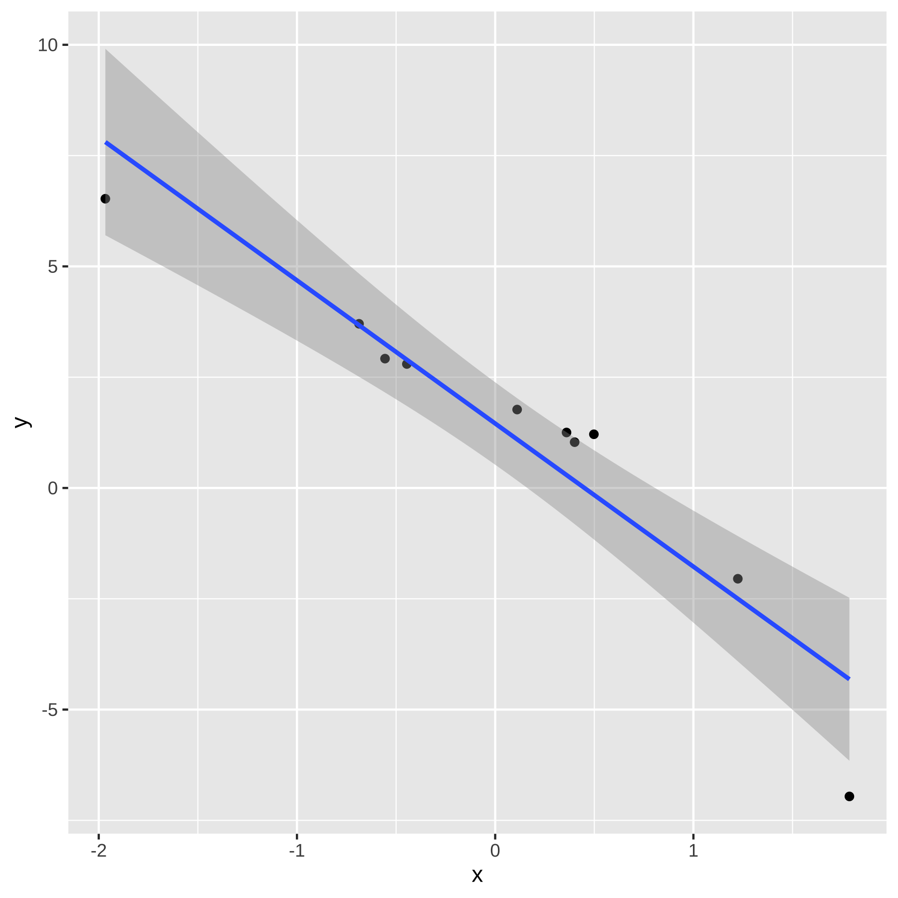

Capítulo 12 - Regressao Multipla
É muito raro que tenhamos apenas um preditor em um contexto de regressão. Talvez em um experimento de laboratório, e mesmo assim é difícil não ter outros preditores. De modo que tudo que vimos até agora é um caso particular raríssimo e pouco útil per se. Para generalizar as derivações e resultados para múltiplos preditores é conveniente utilizar álgebra linear. Basicamente, isso significa usar vetores e matrizes para representar a regressão. As derivações das fórmulas ficam bem fáceis, bem como as propriedades do modelo de regressão. Como não estamos pressupondo que vocês conheçam o básico de Álgebra Linear, iremos pular as derivações e apresentar apenas as intuições, esperando que o que vocês aprenderam com um preditor seja suficiente para entender com múltiplos preditores.
12.1 Revisão de Matriz e Vetores
Regressão múiltipla é mais facilmente compreendida com uso de matrizes. Portanto, vamos fazer uma rápida revisão da álgebra de vetores e matrizes.
Se eu tenho um vetor \(x = [ a_1, a_2, ..., a_n]\), digo que este é um vetor linha com \(n\) elementos. É possível também ter um vetor coluna:
\[ \begin{align} x &= \begin{bmatrix} a_{1} \\ a_{2} \\ \vdots \\ a_{n} \end{bmatrix} \end{align} \] Eu posso somar dois vetores linhas ou dois vetores colunas, se tiverem o mesmo número de elementos. Por exemplo, dois vetores colunas. \[ \begin{align} \begin{bmatrix} a_{1} \\ \vdots \\ a_{n} \end{bmatrix} + \begin{bmatrix} b_{1} \\ \vdots \\ b_{n} \end{bmatrix} &= \begin{bmatrix} a_1 + b_{1} \\ \vdots \\ a_n + b_{n} \end{bmatrix} \end{align} \] E posso fazer multiplicação de vetores (existem vários tipos, aqui me restringo ao produto interno ou produto ponto de vetores), desde que a gente multiplique um vetor linha por uma vetor coluna, mas não o contrário.
\[ \begin{align} \begin{bmatrix} a_{1}, a_2, \cdots, a_{n} \end{bmatrix} \cdot \begin{bmatrix} b_{1} \\ b_{2} \\ \vdots \\ b_{n} \end{bmatrix} &= a_1 \cdot b_{1} + a_2 \cdot b_2 \cdots + a_n \cdot b_{n} \end{align} \] A razão é que a multiplicação de vetores (e matrizes em geral) é basicamente multiplicar linha com coluna. No caso de um vetor coluna multiplicado por um linha, isso não é possível.
A adição e multiplicação de matrizes é basicamente a generalização da ágebra com vetores
12.2 Modelo básico
O modelo básico de regressão linear múltipla pode ser especificado por:
Existem p preditores, \(X_1\), \(X_2\), …, \(X_p\). Não precisamos fazer suposições sobre a distribuição dos preditores, e podem ser correlacionados ou não.
Há uma única variável resposta, \(Y\). Se houvesse mais de uma, teríamos um modelo de regressão multivariada.
\(y_i = \alpha + \beta_1 \cdot x_{1i} + \beta_2 \cdot x_{2i} + ... + \beta_p \cdot x_{pi} + e_i\). Portanto, temos \(p+1\) parâmetros ou coeficientes de regressão a estimar.
O erro \(e_i\) possui esperança condicional zero e variância condicional constante no modelo homocedástico, e não correlacionado entre observações.
Se assumirmos normalidade do termo de erro, temos também:
- O erro \(e_i\) tem uma distribuição normal multivariada, com vetor de médias zero e matriz de variância e covariância cujos elementos fora da diagonal (covariância) são zero, e a diagonal principal é \(\sigma^2\).
12.3 Modelo com matrizes
Vejam que \(\alpha + \beta_1 \cdot x_{1i} + \beta_2 \cdot x_{2i} + ... + \beta_p \cdot x_{pi} + e_i\) é uma soma de produtos, similar ao que eu tinha com vetores no exemplo acima. Exceto que \(\alpha\) não multiplica nada. Então, vou considerar que tenhao um preditor cujo valor é uma constante e igual a \(1\), e os demais preditores, de forma que o lado direito da equação de regressão pode ser reescrito como soma e multiplicação de matrizes. Para o caso de um preditor \(y_i = \alpha + \beta_ix_{1i} + e_i\), a equação de regressão com matrizes, fica:
\[ \begin{align} \begin{bmatrix} y_1 \\ y_2 \\ \vdots \\ y_{n} \end{bmatrix} &= \begin{bmatrix} 1 & x_{11} \\ 1 & x_{12} \\ \vdots \\ 1 & x_{1n} \end{bmatrix} \begin{bmatrix} \alpha \\ \beta_1 \\ \end{bmatrix} + \begin{bmatrix} e_1 \\ e_2 \\ \vdots \\ e_n \end{bmatrix} \end{align} \] Se eu chamar o vetor coluna com os \(y\) de \(Y\), a matriz com a constante \(1\) e \(x_{1i}\) de \(X\), o vetor de coeficientes de \(B\) e o vetor de erros \(\epsilon\), tenho então:
\[ Y = XB + \epsilon \] Veja que a generalização para \(p\) preditores gera a mesma equação:
\[ \begin{align} \begin{bmatrix} y_1 \\ y_2 \\ \vdots \\ y_{n} \end{bmatrix} &= \begin{bmatrix} 1 & x_{11} & x_{21} \cdots & x_{p1}\\ 1 & x_{12} & x_{22} \cdots & x_{p2}\\ \vdots \\ 1 & x_{1n} & x_{2n} \cdots & x_{pn} \end{bmatrix} \begin{bmatrix} \alpha \\ \beta_1 \\ \beta_2 \\ \vdots \\ \beta_p \end{bmatrix} + \begin{bmatrix} e_1 \\ e_2 \\ \vdots \\ e_n \end{bmatrix} \end{align} \]
\[ Y = XB + \epsilon \]
A única diferença é o tamanho da matriz \(X\) e \(B\), em que \(X\) é uma matriz \(n \times (p+1)\), isto é, com \(n\) linhas e \(p+1\) colunas, e \(B\) é uma matriz de tamanho \((p+1) \times 1\) e \(Y\) e \(\epsilon\) são \(n \times 1\). E as suposições podem ser escritas como \(\mathbb{E}[\epsilon|X] = 0\) e \(\mathbb{Var}[\epsilon|X] = \sigma^2I\), em que \(I\) é a matriz identidade, isto é, uma matriz cuja diagonal principal é \(1\) e o resto é \(zero\).
12.3.1 Estimador de MQO
É possível mostrar que o estimador de mínimos quadrados ordinários é dados por:
\[ B = X'X^{-1} \cdot X'Y \] Veja que \(X'Y\) é um produto (com soma) entre \(X\) e \(Y\), ou seja, é como se fosse a covariância entre \(X\) e \(Y\), e \(X'X\) se assemelha à variância de \(X\). E está elevado a \(-1\) porque não existe divisão em matriz, de forma que preciso multiplicar pela inversa.
12.4 Interpretação dos coeficientes
Nosso coeficiente \(\alpha\) é novamente o valor esperado do \(Y\) na origem, isto é:
\[ \alpha = \mathbb{E}[Y|X_1=0, X_2=0, \cdots, X_p=0]$ \] Em um modelo sem interações, o efeito de cada variávei \(X_i\) é a contribuição separada para a resposta esperada (média). Portanto, \(B_i\) mede a contribuição de como \(\mathbb{E}[Y]\) muda à medida que \(X_i\) (e apenas \(X_i\)) muda, para qualquer valor de \(X_i\) (se a equação for linear nas variáveis) e para qualquer valor das demais variáveis (pressuposto de aditividade, sem interação, dos preditores).
Vamos retomar nosso modelo de previsão eleitoral e rodar no R, agora adicionando múltipals variáveis.
library(data.table)
# lista o nome do arquivo em csv
# unzip(here("dados", "votacao_secao_2018_BR.zip"), list = TRUE)
#read data1.csv into data frame
presid_18 <- fread(here("dados","votacao_secao_2018_BR.csv"), encoding = "Latin-1")
# Supondo que seu dataframe seja chamado df
df_resultados <- presid_18 %>%
dplyr::filter(!NR_VOTAVEL %in% c(95,96)) %>%
group_by(NR_ZONA, CD_MUNICIPIO, SG_UF, NR_VOTAVEL, NR_TURNO) %>%
summarise(total_votos = sum(QT_VOTOS)) %>%
pivot_wider(names_from = NR_TURNO, values_from = total_votos, values_fill = 0) %>%
clean_names() %>%
group_by(nr_zona, cd_municipio, sg_uf) %>%
mutate(total_validos_1t = sum(x1),
total_validos_2t = sum(x2)) %>%
dplyr::filter(nr_votavel %in% c(13,17)) %>%
group_by(nr_votavel) %>%
mutate(percentual_1t = x1 /total_validos_1t,
percentual_2t = x2 / total_validos_2t) %>%
ungroup() %>%
dplyr::select(-c(x1, x2, total_validos_1t, total_validos_2t)) %>%
pivot_wider(names_from = nr_votavel,
values_from = c(percentual_1t, percentual_2t))
# remove
# rm(presid_18)
df_resultados %>%
ggplot(aes(x=percentual_1t_17, y=percentual_2t_17)) + geom_point() + facet_wrap(~sg_uf) + geom_smooth(method="lm", se=F, linewidth = .5)
# modelo de regressão
reg1 <- lm(percentual_2t_17 ~ percentual_1t_17 + percentual_1t_13 + sg_uf, data = df_resultados)
summary(reg1)##
## Call:
## lm(formula = percentual_2t_17 ~ percentual_1t_17 + percentual_1t_13 +
## sg_uf, data = df_resultados)
##
## Residuals:
## Min 1Q Median 3Q Max
## -0.190977 -0.010934 -0.001161 0.009747 0.272558
##
## Coefficients:
## Estimate Std. Error t value Pr(>|t|)
## (Intercept) 0.355531 0.005763 61.689 <2e-16 ***
## percentual_1t_17 0.777791 0.005276 147.419 <2e-16 ***
## percentual_1t_13 -0.277355 0.004577 -60.603 <2e-16 ***
## sg_ufAL -0.101170 0.004644 -21.787 <2e-16 ***
## sg_ufAM -0.084715 0.004815 -17.596 <2e-16 ***
## sg_ufAP -0.087085 0.006414 -13.577 <2e-16 ***
## sg_ufBA -0.086392 0.004355 -19.835 <2e-16 ***
## sg_ufCE -0.150819 0.004654 -32.406 <2e-16 ***
## sg_ufDF -0.077372 0.006221 -12.437 <2e-16 ***
## sg_ufES -0.079796 0.004701 -16.974 <2e-16 ***
## sg_ufGO -0.085402 0.004352 -19.624 <2e-16 ***
## sg_ufMA -0.105331 0.004464 -23.596 <2e-16 ***
## sg_ufMG -0.065445 0.004235 -15.454 <2e-16 ***
## sg_ufMS -0.061922 0.004685 -13.219 <2e-16 ***
## sg_ufMT -0.088621 0.004493 -19.722 <2e-16 ***
## sg_ufPA -0.071259 0.004489 -15.876 <2e-16 ***
## sg_ufPB -0.119179 0.004447 -26.801 <2e-16 ***
## sg_ufPE -0.113396 0.004454 -25.458 <2e-16 ***
## sg_ufPI -0.091415 0.004480 -20.404 <2e-16 ***
## sg_ufPR -0.060601 0.004284 -14.145 <2e-16 ***
## sg_ufRJ -0.096635 0.004433 -21.797 <2e-16 ***
## sg_ufRN -0.112249 0.004522 -24.826 <2e-16 ***
## sg_ufRO -0.059576 0.004958 -12.017 <2e-16 ***
## sg_ufRR -0.085327 0.006511 -13.104 <2e-16 ***
## sg_ufRS -0.061179 0.004262 -14.353 <2e-16 ***
## sg_ufSC -0.061522 0.004327 -14.220 <2e-16 ***
## sg_ufSE -0.094247 0.004814 -19.578 <2e-16 ***
## sg_ufSP -0.039378 0.004250 -9.265 <2e-16 ***
## sg_ufTO -0.095958 0.004526 -21.202 <2e-16 ***
## sg_ufZZ -0.081547 0.004558 -17.892 <2e-16 ***
## ---
## Signif. codes: 0 '***' 0.001 '**' 0.01 '*' 0.05 '.' 0.1 ' ' 1
##
## Residual standard error: 0.02 on 6209 degrees of freedom
## (1 observation deleted due to missingness)
## Multiple R-squared: 0.9918, Adjusted R-squared: 0.9918
## F-statistic: 2.588e+04 on 29 and 6209 DF, p-value: < 2.2e-16A interpretação das variáveis, portanto, é a seguinte:
O intercepto mede o percentual médio no segundo turno quando todas as variáveis são zero. Ou seja, Haddad e Bolsonaro tiveram 0 pontos percentuais (não existe caso assim!) e a UF é o Acre, que é a categoria de referência.
A variável “percentual_1t_17” mede o efeito preditivo no voto do 2o turno do Bolsonaro de aumento de um ponto percentual no voto do primeiro turno, que é de 0,77 pontos percentuais. A variável “percentual_1t_13” mede similarmente o efeito preditivo de aumento de um ponto percentual do voto do Haddad no primeiro turno sobre o voto do Bolsonaro no 2o turno. Como esperado, a relação é negativa, isto é, quanto melhor o Haddad foi no primeiro turno, pior o Bolsonaro no segundo turno naquela seção eleitoral. E o efeito de cada UF é o efeito de estar naquela UF, em comparação com a categoria de referência, ACRE.
12.5 Regressão múltipla versus Múltiplas Regressões Separadas ou Viés de variável omitida
Rodar uma regressão com duas variáveis (digamos), não é o mesmo que rodar duas regressões separadas, uma com cada variável. A razão é que os preditores em geral terão alguma correlação entre si. Para ver isso, suponha que o verdadeiro modelo é \(Y = \alpha + \beta_1 \cdot X_1 + \beta_2 \cdot X_2 + \epsilon\). O que aconteceria se rodássemos uma regressão com um preditor apenas (\(X_1\))?
Vamos usar as seguintes propriedades da covariância nessa derivação.
Sejam \(X\) e \(Y\) duas v.a., Seja \(A\) uma constante. Então, \(\mathbb{Cov}[X,Y + A] = \mathbb{Cov}[X,Y] + \mathbb{Cov}[X,A]\). Como \(A\) é constante, \(\mathbb{Cov}[X,A] = 0\) e, portanto, \(\mathbb{Cov}[X,Y + A] = \mathbb{Cov}[X,Y]\).
\(\mathbb{Cov}[X,Y \cdot A] = A \cdot \mathbb{Cov}[X,Y]\).
Em um modelo com um único preditor, teremos: \(Y = \alpha + \beta_1^* \cdot X_1 + \epsilon\)
Designei o beta da equação com um preditor por \(\beta_1^*\), para diferenciar do \(\beta_1\) da verdadeira equação, com dois preditores.
Nós sabemos que \(\beta_1^* = \frac{\mathbb{Cov}[X_1,Y]}{\mathbb{Var}[X_1]}\)
Vamos substituir o \(Y\) do modelo verdadeiro na equação do \(\beta_1^*\).
\[\begin{align*} \beta_1^* = \frac{\mathbb{Cov}[X_1,\alpha + \beta_1 \cdot X_1 + \beta_2 \cdot X_2 + e]}{\mathbb{Var}[X_1]} = \\ \frac{\mathbb{Cov}[X_1,\beta_1 \cdot X_1] + \mathbb{Cov}[X_1, \beta_2 \cdot X_2] + \mathbb{Cov}[X_1, e]}{\mathbb{Var}[X_1]} = \\ \frac{\beta_1 \cdot \mathbb{Cov}[X_1, X_1] + \beta_2 \cdot \mathbb{Cov}[X_1, X_2] + \mathbb{ Cov}[X_1,e]}{\mathbb{Var}[X_1]} = \\ \frac{\beta_1 \cdot \mathbb{Var}[X_1] + \beta_2 \cdot \mathbb{Cov}[X_1, X_2] + 0}{\mathbb{Var}[X_1]} = \\ \frac{\beta_1 \cdot \mathbb{Var}[X_1]}{\mathbb{Var}[X_1]} + \frac{\beta_2 \cdot \mathbb{Cov}[X_1, X_2] + 0}{\mathbb{Var}[X_1]} = \\ \beta_1 + \frac{\beta_2 \cdot \mathbb{Cov}[X_1, X_2] + 0}{\mathbb{Var}[X_1]} = \\ \beta_1^* = \beta_1 + \frac{\beta_2 \cdot \mathbb{Cov}[X_1, X_2]}{\mathbb{Var}[X_1]} \end{align*}\]
Vemos que a inclinação \(\beta_1^*\) inclui a contribuição direta de \(X_1\) via \(\beta_1\) mais a contribuição indireta da correlação com \(X_2\), via \(\beta_2\).
Portanto, se eu rodar uma regressão com um preditor quando o verdadeiro modelo tem dois preditores, o coeficiente de \(\beta_1^*\) será uma média entre \(\beta_1\) e \(\beta_2\). Por outro lado, se eu rodar a regressão com o modelo correto com os dois preditores, consigo que \(\beta_1^*\) reflita só a contribuição de \(\beta_1\).
Talvez você esteja se perguntando a essa altura: quem garante que o verdadeiro modelo possua só dois preditores? Isso é o que chamamos de viés de variável omitida. Se omitirmos da regressão uma variável \(X_k\) correlacionada com \(X_j\), \(j \neq k\), então o coeficiente \(\beta_j\) reflitirá também o efeito de \(\beta_k\).
Aqui não estamos falando de causalidade, apenas da contribuição para a previsão da nossa variável resposta. Naturalmente, antes da moderna abordagem de inferência causal por resultados potenciais de Rubin (ou redes Bayesianas em modelos estruturais de Pearl), as pessoas pensavam que, controlando para o máximo de variáveis possível, com sorte seria possível eliminar (ou reduzir a um mínimo) o viés de variável omitida e, portanto, estar seguro que \(\beta_1\) estimaria o efeito causal.
Nós hoje sabemos que o modo mais seguro de pensar causalidade é usando uma das duas abordagens (as iniciadas por Rubin ou Pearl), e verificando (por exemplo com resultados potenciais) que a suposição de independência condicional (CIA, de Conditional Independence Assumption) é plausível para poder interpretar \(\beta_1\) causalmente. Sem um modelo causal, a abordagem de introdução de regressores para controlar o viés de variável omitida não nos permite fazer inferência causal, exceto em casos muitos simples ou quando implicitamente temos garantida a validade da CIA (como em um experimento bem conduzido e com compliance), como é o caso das ciências naturais como física e química.
12.6 Matriz chapéu
Uma forma interessante de visualizar as previsões do modelo é que podemos escrever \(\hat{Y} = XB\). Substituindo a fórmula do \(B\), temos que: \[ \hat{Y} = X X'X^{-1}X'Y = \\ (X X'X^{-1}X')Y = \\ HY \] Essa equação mostra que as previsões são dadas pelas respostas observadas, ponderadas pela matriz chapéu (hat), \(H\).
12.7 Multicolinearidade
Até o momento não falamos sobre em que condições a matrix inversa \(X'X^{-1}\) existe. Nós sabemos que nem todas as matrizes podem ser invertíveis. Matrizes com determinante zero são não-invertíveis. A intuição é como pensar que não é possível dividir um escalar por zero. O determinante é zero quando as colunas não são linearmente independentes. Ou seja, quando uma coluna (ou mais) é uma combinação linear de um ou mais colunas. No nosso caso, quando a correlação for \(1\) (ou \(-1\)). Nesses casos, não é possível estimar os coeficientes da regressão e acontece quando temos multicolinearidade.
Softwares modernos, como R, irão “dropar” uma (ouas mais) variável(eis) se isso ocorrer, automaticamente, para evitar que a matriz não seja invertível. Assim, a menos que acorrelação seja perfeita, multicolinearidade não costuma ser um problema.
12.8 Erro padrão Robusto
Na presernça de heterocedasticidade ou correlação nos erros (como autocorrelação temporal ou autocorrelação espacial), precisamos corrigir o cálculo do erro padrão. Para explicar como é calculado o erro padrão robusto, vamos derivar o erro padrão novamente, agora com a notação matricial.
Lembremos que: \(\hat{B} = (X'X)^{-1}(X'Y)\) e \(Y = XB + e\). Logo, reescrevendo a equação de regressão, temos: \[\begin{align} \hat{B} = (X'X)^{-1}(X'[XB + e]) \\ = (X'X)^{-1}(X'XB + X'e) \\ = (X'X)^{-1}X'XB + (X'X)^{-1}X'e \\ = B + (X'X)^{-1}X'e \end{align}\]
E a partir dessa equação, podemos calcular a variância dos estimadores.
\[\begin{align} \mathbb{Var}[\hat{B}|X] = \mathbb{Var}[B + (X'X)^{-1}X'e|X] \\ = \mathbb{Var}[(X'X)^{-1}X'e|X] \\ = (X'X)^{-1}X'\mathbb{Var}[e|X]X(X'X)^{-1} \\ = (X'X)^{-1}X'\sigma^2IX(X'X)^{-1} \\ = \sigma^2(X'X)^{-1}X'X(X'X)^{-1} \\ = \sigma^2(X'X)^{-1} \end{align}\]
Para ficar mais familiar para a gente, posso multipliar e dividir por \(n\), que não altero a equação. Assim, temos: \[ \mathbb{Var}[\hat{B}|X] = \frac{\sigma^2}{n}(n^{-1}X'X)^{-1} \] Lembrem-e que a variância do \(\hat{\beta|x}\) no modelo de regressão simples era dada por: \(\frac{\sigma^2}{nS_x^2}\)
Então, \(\frac{\sigma^2}{n}\) é igual ao que tínhamos antes. À medida que \(n\) cresce, esperamos que \(X'X\) cresça, já que é uma soma sobre todos os dados \(n\). Dividingo todas as entradas da matriz por \(n\) compensa isso. Se a covariância amostral entre todos os preditores fossem iguais a zero (sem correlação), então quando calculássemos a inversa obteríamos apenas a variância amostral de \(X\) \(1/S_x^2\) na diagonal principal, e temos um termo que já conhecemos de regressão simples. Lá, como só tem um preditor, não tem como ter covariância com outro preditor.
Agora podemos falar de erro padrão robusto. Notem que em nossa derivação, a certa altura, tivemos: \[ \mathbb{Var}[\hat{B}|X] = (X'X)^{-1}X'\sigma^2IX(X'X)^{-1} \] Se chamarmos \(\sigma^2I\) de \(\Omega\), reescrevo a equação como:
\[ \mathbb{Var}[\hat{B}|X] = (X'X)^{-1}X'\Omega X(X'X)^{-1} \] E essa equação, escrita desse formato, é chamada de equação sanduíche, pois temos 1. \(X'\Omega X\) no meio 2. \((X'X)^{-1}\) nas pontas. Ou seja, a carne \(X'\Omega X\) vai no meio de duas fatias de pão \((X'X)^{-1}X'\).
Eu suponho que isso seja engraçado de alguma forma (ou talvez fosse uma forma menmômica de memorizar a equação). Mas o fato é que o termo sanduíche pegou de tal forma que nosso erro padrão robusto envolve trocar a “carne”.
Veja que definimos \(\Omega = \sigma^2I\). E \(\sigma^2I\) pressupõe que temos homecedasticidade, já que a variância do erro é constante. Temos portanto de modificar a “carne” para calcular o erro padrão-robusto. Vamos fazer isso manualmente, primeiro calculando o erro padrão tradicional, e depois o que seria um erro padrão robusto.
library(ggplot2)
library(tidyverse)
set.seed(123)
x <- c(1:8, 10, 15)
y <- c(5 + rnorm(8,sd = 1.5), 40, 65)
df <- data.frame(y=y, x=x)
df %>%
ggplot(aes(x=x, y=y)) + geom_point()
##
## Call:
## lm(formula = y ~ x)
##
## Residuals:
## Min 1Q Median 3Q Max
## -19.736 -6.320 2.465 8.326 12.481
##
## Coefficients:
## Estimate Std. Error t value Pr(>|t|)
## (Intercept) -11.0831 6.6974 -1.655 0.13655
## x 4.2401 0.9208 4.605 0.00174 **
## ---
## Signif. codes: 0 '***' 0.001 '**' 0.01 '*' 0.05 '.' 0.1 ' ' 1
##
## Residual standard error: 11.53 on 8 degrees of freedom
## Multiple R-squared: 0.7261, Adjusted R-squared: 0.6918
## F-statistic: 21.2 on 1 and 8 DF, p-value: 0.001745Nós construímos um “toy model” em que não existe relação entre \(x\) e \(y\). Porém, por causa de dois “outliers” o R achou que existia associação entre as variáveis. Como o R calcula o erro padrão? Nossa fórmula requer \(\sigma^2\), \(I\) e a matriz de preditores \(X\), que depois vou transpor, calcular inversa etc. No R, podemos computar cada um desses itens manualmente da seguinte forma.
omega <- sigma2*mat_I
bread <- solve(t(X)%*%X)
meat <- (t(X) %*% omega %*% X)
vce <- bread %*% meat %*% bread
sqrt(diag(vce))## (Intercept) x
## 6.6974057 0.9208285Se inspecionarmos omega mais detalhadamente, temos:
## [,1] [,2] [,3] [,4] [,5] [,6] [,7] [,8]
## [1,] 133.0395 0.0000 0.0000 0.0000 0.0000 0.0000 0.0000 0.0000
## [2,] 0.0000 133.0395 0.0000 0.0000 0.0000 0.0000 0.0000 0.0000
## [3,] 0.0000 0.0000 133.0395 0.0000 0.0000 0.0000 0.0000 0.0000
## [4,] 0.0000 0.0000 0.0000 133.0395 0.0000 0.0000 0.0000 0.0000
## [5,] 0.0000 0.0000 0.0000 0.0000 133.0395 0.0000 0.0000 0.0000
## [6,] 0.0000 0.0000 0.0000 0.0000 0.0000 133.0395 0.0000 0.0000
## [7,] 0.0000 0.0000 0.0000 0.0000 0.0000 0.0000 133.0395 0.0000
## [8,] 0.0000 0.0000 0.0000 0.0000 0.0000 0.0000 0.0000 133.0395
## [9,] 0.0000 0.0000 0.0000 0.0000 0.0000 0.0000 0.0000 0.0000
## [10,] 0.0000 0.0000 0.0000 0.0000 0.0000 0.0000 0.0000 0.0000
## [,9] [,10]
## [1,] 0.0000 0.0000
## [2,] 0.0000 0.0000
## [3,] 0.0000 0.0000
## [4,] 0.0000 0.0000
## [5,] 0.0000 0.0000
## [6,] 0.0000 0.0000
## [7,] 0.0000 0.0000
## [8,] 0.0000 0.0000
## [9,] 133.0395 0.0000
## [10,] 0.0000 133.0395Como falamos, é uma matriz de variância constante (homocedástica). Em nosso “toy model”, contudo, não faz sentido assumir que a variância é constante. É provável que os dois “outliers” tenham vindo de uma distribuição com variância bem maior. E isso levaria a um erro padrão maior para a o coeficiente da variável \(x\).
A questão então é como calcular essas variância diferente para esse pontos. Há inúmeras maneiras de fazer isso. A default do Stata, chamada de “HC1”, em que “HC” quer dizer “Heteroscedasticity-Consistent”. A fórmular para o erro padrão robusto “HC1” é a seguinte: \[ \frac{n}{n-k}\hat{e}^2 \] em que \(\hat{e}^2\) é o quadrado dos resíduos e \(k\) o número de parâmetros. Em nosso modelo simples, \(k=2\). E substituirmos a variância constante por essa fórmula em nossa “carne”, temos:
sigma2_hc1 <- residuals(fit)^2*(n/(n-2))
omega <- sigma2_hc1*mat_I
bread <- solve(t(X)%*%X)
meat <- (t(X) %*% omega %*% X)
vce <- bread %*% meat %*% bread
sqrt(diag(vce))## (Intercept) x
## 5.863432 0.992626Vemos que o erro-padrão robusto é maior que o anterior, mas a associação ainda é significativa. O erro padrão robusto do pacote do R “sandwich” usa o “HC3”, que possui outra fórmula, e tem desempenho melhor em amostras pequenas. Sua fórmula é:
\[ \frac{\hat{e}^2}{(1-h_i)^2} \] Aqui, \(h_i\) são os valores chapéus da matriz chapéu, \(H\), que vimos antes. Os valores chpéus variam entre \(0\) e \(1\) e quanto maior o número, mais influente a observação. Então, sabemos que nossos dois últimos números terão valores chapéu maiores, ou seja, vão inflar a variância para esses dois valores. No R, podemos calcular os valores chapéus com a função “hatvalues”.
sigma2_hc3 <- residuals(fit)^2/(1 - hatvalues(fit))^2
omega <- sigma2_hc3*mat_I
bread <- solve(t(X)%*%X)
meat <- (t(X) %*% omega %*% X)
vce <- bread %*% meat %*% bread
sqrt(diag(vce))## (Intercept) x
## 9.541330 1.917635E posso calcular o intervalo de confiança com o novo erro padrão. Obviamente, não iremos fazer na “mão” esse cálculo todo. Vamos usar os pacotes “sandwich” e “lmtest” para fazer o teste de hipótese com erro padrão robusto.
## Warning: package 'sandwich' was built under R version 4.3.2##
## t test of coefficients:
##
## Estimate Std. Error t value Pr(>|t|)
## (Intercept) -11.0831 9.5413 -1.1616 0.27889
## x 4.2401 1.9176 2.2111 0.05798 .
## ---
## Signif. codes: 0 '***' 0.001 '**' 0.01 '*' 0.05 '.' 0.1 ' ' 1Vemos, portanto, que nosso erro padrão é robusto a observações muito influentes que são “outliers”. Uma forma de verificar se temos esse problema é ver se temos resíduos grandes e observações muito influentes (valores chapéu altos). Um comando básico do R permite inspecionar visualmente se é o caso. Pontos nos cantos direitos superiores ou inferiores indica observações exibindo influência em nosso modelo.
Resíduos grandes (ou variância não constante) pode decorrer de um modelo mal-especificado (preditor ausente, ausência de interação, efeitos não lineares etc.).

Como mencionado, há vários tipos de erros padrão robustos, “HC0”, “HC1”, “HC2”, “HC3”, entre outros. Vamos falar rapidamente sobre cada uma deles. Antes disso, vamos comparar para nossa regressão como o erro padrão muda para cada um desses tipos.
##
## Please cite as:## Hlavac, Marek (2022). stargazer: Well-Formatted Regression and Summary Statistics Tables.## R package version 5.2.3. https://CRAN.R-project.org/package=stargazerlibrary(lmtest)
m2 <- coeftest(reg1, vcovHC(reg1, type = "HC0"))
m3 <- coeftest(reg1, vcovHC(reg1, type = "HC1"))
m4 <- coeftest(reg1, vcovHC(reg1, type = "HC2"))
m5 <- coeftest(reg1, vcovHC(reg1, type = "HC3"))
stargazer(reg1,
m2,
m3,
m4,
m5, type = "html")| Dependent variable: | |||||
| percentual_2t_17 | |||||
| OLS | coefficient | ||||
| test | |||||
| (1) | (2) | (3) | (4) | (5) | |
| percentual_1t_17 | 0.778*** | 0.778*** | 0.778*** | 0.778*** | 0.778*** |
| (0.005) | (0.010) | (0.010) | (0.010) | (0.010) | |
| percentual_1t_13 | -0.277*** | -0.277*** | -0.277*** | -0.277*** | -0.277*** |
| (0.005) | (0.008) | (0.008) | (0.008) | (0.008) | |
| sg_ufAL | -0.101*** | -0.101*** | -0.101*** | -0.101*** | -0.101*** |
| (0.005) | (0.007) | (0.007) | (0.007) | (0.007) | |
| sg_ufAM | -0.085*** | -0.085*** | -0.085*** | -0.085*** | -0.085*** |
| (0.005) | (0.007) | (0.007) | (0.007) | (0.007) | |
| sg_ufAP | -0.087*** | -0.087*** | -0.087*** | -0.087*** | -0.087*** |
| (0.006) | (0.008) | (0.008) | (0.008) | (0.008) | |
| sg_ufBA | -0.086*** | -0.086*** | -0.086*** | -0.086*** | -0.086*** |
| (0.004) | (0.007) | (0.007) | (0.007) | (0.007) | |
| sg_ufCE | -0.151*** | -0.151*** | -0.151*** | -0.151*** | -0.151*** |
| (0.005) | (0.008) | (0.008) | (0.008) | (0.008) | |
| sg_ufDF | -0.077*** | -0.077*** | -0.077*** | -0.077*** | -0.077*** |
| (0.006) | (0.007) | (0.007) | (0.007) | (0.008) | |
| sg_ufES | -0.080*** | -0.080*** | -0.080*** | -0.080*** | -0.080*** |
| (0.005) | (0.007) | (0.007) | (0.007) | (0.007) | |
| sg_ufGO | -0.085*** | -0.085*** | -0.085*** | -0.085*** | -0.085*** |
| (0.004) | (0.007) | (0.007) | (0.007) | (0.007) | |
| sg_ufMA | -0.105*** | -0.105*** | -0.105*** | -0.105*** | -0.105*** |
| (0.004) | (0.007) | (0.007) | (0.007) | (0.007) | |
| sg_ufMG | -0.065*** | -0.065*** | -0.065*** | -0.065*** | -0.065*** |
| (0.004) | (0.007) | (0.007) | (0.007) | (0.007) | |
| sg_ufMS | -0.062*** | -0.062*** | -0.062*** | -0.062*** | -0.062*** |
| (0.005) | (0.007) | (0.007) | (0.007) | (0.007) | |
| sg_ufMT | -0.089*** | -0.089*** | -0.089*** | -0.089*** | -0.089*** |
| (0.004) | (0.007) | (0.007) | (0.007) | (0.007) | |
| sg_ufPA | -0.071*** | -0.071*** | -0.071*** | -0.071*** | -0.071*** |
| (0.004) | (0.007) | (0.007) | (0.007) | (0.007) | |
| sg_ufPB | -0.119*** | -0.119*** | -0.119*** | -0.119*** | -0.119*** |
| (0.004) | (0.007) | (0.007) | (0.007) | (0.007) | |
| sg_ufPE | -0.113*** | -0.113*** | -0.113*** | -0.113*** | -0.113*** |
| (0.004) | (0.007) | (0.007) | (0.007) | (0.007) | |
| sg_ufPI | -0.091*** | -0.091*** | -0.091*** | -0.091*** | -0.091*** |
| (0.004) | (0.007) | (0.007) | (0.007) | (0.007) | |
| sg_ufPR | -0.061*** | -0.061*** | -0.061*** | -0.061*** | -0.061*** |
| (0.004) | (0.007) | (0.007) | (0.007) | (0.007) | |
| sg_ufRJ | -0.097*** | -0.097*** | -0.097*** | -0.097*** | -0.097*** |
| (0.004) | (0.007) | (0.007) | (0.007) | (0.007) | |
| sg_ufRN | -0.112*** | -0.112*** | -0.112*** | -0.112*** | -0.112*** |
| (0.005) | (0.007) | (0.007) | (0.007) | (0.008) | |
| sg_ufRO | -0.060*** | -0.060*** | -0.060*** | -0.060*** | -0.060*** |
| (0.005) | (0.007) | (0.007) | (0.007) | (0.007) | |
| sg_ufRR | -0.085*** | -0.085*** | -0.085*** | -0.085*** | -0.085*** |
| (0.007) | (0.007) | (0.007) | (0.008) | (0.008) | |
| sg_ufRS | -0.061*** | -0.061*** | -0.061*** | -0.061*** | -0.061*** |
| (0.004) | (0.007) | (0.007) | (0.007) | (0.007) | |
| sg_ufSC | -0.062*** | -0.062*** | -0.062*** | -0.062*** | -0.062*** |
| (0.004) | (0.007) | (0.007) | (0.007) | (0.007) | |
| sg_ufSE | -0.094*** | -0.094*** | -0.094*** | -0.094*** | -0.094*** |
| (0.005) | (0.007) | (0.007) | (0.007) | (0.008) | |
| sg_ufSP | -0.039*** | -0.039*** | -0.039*** | -0.039*** | -0.039*** |
| (0.004) | (0.007) | (0.007) | (0.007) | (0.007) | |
| sg_ufTO | -0.096*** | -0.096*** | -0.096*** | -0.096*** | -0.096*** |
| (0.005) | (0.007) | (0.007) | (0.007) | (0.007) | |
| sg_ufZZ | -0.082*** | -0.082*** | -0.082*** | -0.082*** | -0.082*** |
| (0.005) | (0.009) | (0.009) | (0.009) | (0.009) | |
| Constant | 0.356*** | 0.356*** | 0.356*** | 0.356*** | 0.356*** |
| (0.006) | (0.010) | (0.010) | (0.011) | (0.011) | |
| Observations | 6,239 | ||||
| R2 | 0.992 | ||||
| Adjusted R2 | 0.992 | ||||
| Residual Std. Error | 0.020 (df = 6209) | ||||
| F Statistic | 25,882.990*** (df = 29; 6209) | ||||
| Note: | p<0.1; p<0.05; p<0.01 | ||||
| 2.5 % | 97.5 % | |
|---|---|---|
| (Intercept) | 0.3350033 | 0.3760590 |
| percentual_1t_17 | 0.7583797 | 0.7972015 |
| percentual_1t_13 | -0.2936573 | -0.2610519 |
| sg_ufAL | -0.1151015 | -0.0872385 |
| sg_ufAM | -0.0986993 | -0.0707314 |
| sg_ufAP | -0.1026175 | -0.0715529 |
| sg_ufBA | -0.1003028 | -0.0724807 |
| sg_ufCE | -0.1662120 | -0.1354263 |
| sg_ufDF | -0.0915291 | -0.0632155 |
| sg_ufES | -0.0937037 | -0.0658873 |
| sg_ufGO | -0.0991474 | -0.0716567 |
| sg_ufMA | -0.1192041 | -0.0914571 |
| sg_ufMG | -0.0792045 | -0.0516851 |
| sg_ufMS | -0.0757868 | -0.0480581 |
| sg_ufMT | -0.1024452 | -0.0747959 |
| sg_ufPA | -0.0851832 | -0.0573345 |
| sg_ufPB | -0.1332370 | -0.1051214 |
| sg_ufPE | -0.1273447 | -0.0994480 |
| sg_ufPI | -0.1054809 | -0.0773482 |
| sg_ufPR | -0.0743198 | -0.0468815 |
| sg_ufRJ | -0.1104185 | -0.0828524 |
| sg_ufRN | -0.1266669 | -0.0978309 |
| sg_ufRO | -0.0735371 | -0.0456145 |
| sg_ufRR | -0.0999596 | -0.0706939 |
| sg_ufRS | -0.0748960 | -0.0474614 |
| sg_ufSC | -0.0752199 | -0.0478245 |
| sg_ufSE | -0.1085156 | -0.0799776 |
| sg_ufSP | -0.0531533 | -0.0256020 |
| sg_ufTO | -0.1098511 | -0.0820642 |
| sg_ufZZ | -0.0987445 | -0.0643491 |
12.8.1 Entendendo o erro padrão robusto
Vamos fazer uma simulação no R para entender os vários tipos de erro padrão robusto. Vamos criar um modelo com heterocedasticidade.
x <- rnorm(10)
e <- rnorm(10, 0, x^2) # o DP do erro é igual a .5*x^2
a <- 2
b <- -2
y <- a + b*x + e
df <- data.frame(y=y, x=x)
df %>%
ggplot(aes(y=y, x=x)) + geom_point() + geom_smooth(method="lm")## `geom_smooth()` using formula = 'y ~ x'
## Warning: package 'easystats' was built under R version 4.3.2## # Attaching packages: easystats 0.7.0 (red = needs update)
## ✔ bayestestR 0.13.1 ✔ correlation 0.8.4
## ✔ datawizard 0.9.0 ✔ effectsize 0.8.6
## ✖ insight 0.19.6 ✔ modelbased 0.8.6
## ✔ performance 0.10.8 ✔ parameters 0.21.3
## ✔ report 0.5.7 ✔ see 0.8.1
##
## Restart the R-Session and update packages with `easystats::easystats_update()`.
f2 <- coeftest(m_sim, vcovHC(m_sim, type = "HC0"))
f3 <- coeftest(m_sim, vcovHC(m_sim, type = "HC1"))
f4 <- coeftest(m_sim, vcovHC(m_sim, type = "HC2"))
f5 <- coeftest(m_sim, vcovHC(m_sim, type = "HC3"))
stargazer(m_sim,
f2,
f3,
f4,
f5, type = "html")| Dependent variable: | |||||
| y | |||||
| OLS | coefficient | ||||
| test | |||||
| (1) | (2) | (3) | (4) | (5) | |
| x | -3.230*** | -3.230*** | -3.230*** | -3.230*** | -3.230*** |
| (0.402) | (0.529) | (0.591) | (0.696) | (0.923) | |
| Constant | 1.455*** | 1.455*** | 1.455*** | 1.455*** | 1.455** |
| (0.403) | (0.341) | (0.381) | (0.424) | (0.538) | |
| Observations | 10 | ||||
| R2 | 0.890 | ||||
| Adjusted R2 | 0.876 | ||||
| Residual Std. Error | 1.272 (df = 8) | ||||
| F Statistic | 64.688*** (df = 1; 8) | ||||
| Note: | p<0.1; p<0.05; p<0.01 | ||||
# dados de 2022
#read into data frame
presid_22 <- fread(here("dados","votacao_secao_2022_BR.csv"), encoding = "Latin-1")
df_resultados_22_aux <- presid_22 %>%
dplyr::filter(!NR_VOTAVEL %in% c(95,96)) %>%
group_by(NR_ZONA, CD_MUNICIPIO, SG_UF, NR_VOTAVEL, NR_TURNO) %>%
summarise(total_votos = sum(QT_VOTOS)) %>%
pivot_wider(names_from = NR_TURNO, values_from = total_votos, values_fill = 0) %>%
clean_names() %>%
group_by(nr_zona, cd_municipio, sg_uf) %>%
mutate(total_validos_1t = sum(x1),
total_validos_2t = sum(x2)) %>%
dplyr::filter(nr_votavel %in% c(13,22)) %>%
group_by(nr_votavel) %>%
mutate(percentual_1t = x1/total_validos_1t,
percentual_2t = x2/total_validos_2t) %>%
ungroup()
df_resultados_22 <- df_resultados_22_aux%>%
dplyr::select(-c(x1, x2, total_validos_1t, total_validos_2t)) %>%
pivot_wider(names_from = nr_votavel,
values_from = c(percentual_1t, percentual_2t)) %>%
rename(percentual_1t_17 = percentual_1t_22,
percentual_2t_17 = percentual_2t_22)Agora que importamos os dados de 22, podemos fazer nossa previsão, usando os resultados do primeiro turno.
df_resultados_22_aux1 <- df_resultados_22_aux %>%
ungroup() %>%
group_by(nr_zona, cd_municipio, sg_uf) %>%
summarise(total_validos_1t = sum(total_validos_1t))
#Previsão
previsoes <- predict(reg1, newdata = df_resultados_22, interval = "prediction", level = .95) %>%
as.data.frame()
df_resultados_22_final <- df_resultados_22 %>%
ungroup() %>%
mutate(prev_perc = previsoes$fit,
prev_perc_lower = previsoes$lwr,
prev_perc_upper = previsoes$upr,
validos_prev = df_resultados_22_aux1$total_validos_1t*prev_perc,
validos_prev_lower = df_resultados_22_aux1$total_validos_1t*prev_perc_lower,
validos_prev_upper = df_resultados_22_aux1$total_validos_1t*prev_perc_upper)
tot_valido <- sum(df_resultados_22_aux1$total_validos_1t)
df_resultados_22_final %>%
summarise(perc_previsto = sum(validos_prev,na.rm = T)/tot_valido,
perc_previsto_lower = sum(validos_prev_lower,na.rm = T)/tot_valido,
perc_previsto_upper = sum(validos_prev_upper,na.rm = T)/tot_valido)## # A tibble: 1 × 3
## perc_previsto perc_previsto_lower perc_previsto_upper
## <dbl> <dbl> <dbl>
## 1 0.481 0.442 0.521